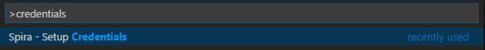
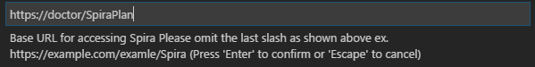
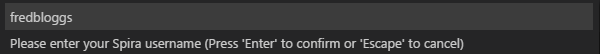
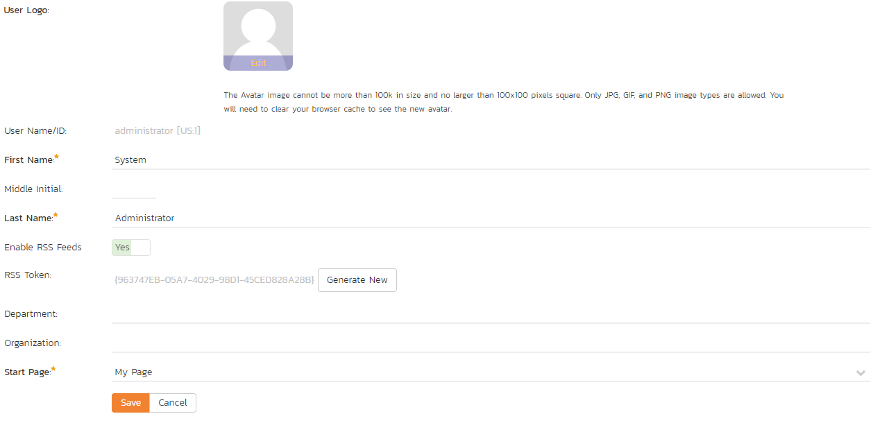
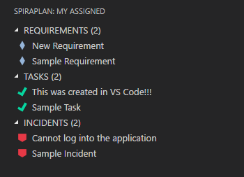
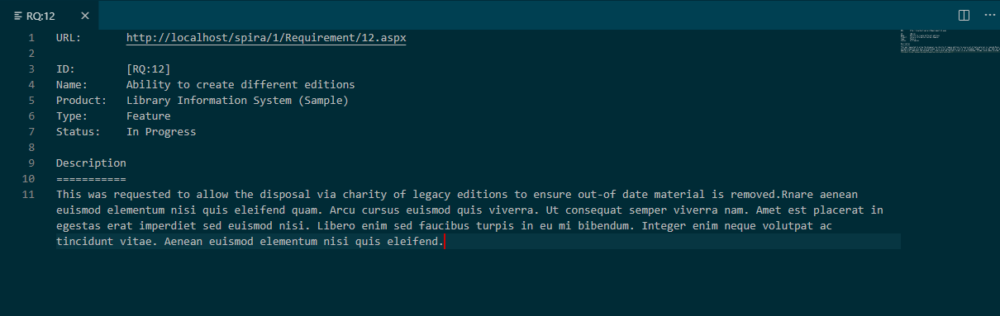
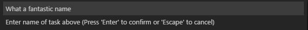
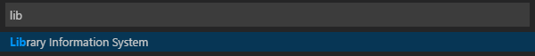
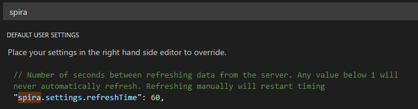
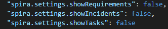

Visual Studio Code
This plugin creates a new custom view which allows you to seamlessly view your assigned Spira Tasks, Requirements, and Incidents as well as create brand new Tasks right from Visual Studio Code.
Guide Basics
Unfortunately, this plugin only works with version 5.3 and above of the Spira ALM suite. If you have an older version, you need to update to use this plugin.
This guide assumes you are familiar with Visual Studio Code and have already installed our plugin from the store.
Logging in
Open the command palette and type in 'credentials' as shown:

Hit return to begin the Spira authentication process. You should see an input box that asks you to type the base URL of your Spira service. This should access the 'root' directory of your Spira, not including the ending slash. An example is provided below:

Hit return when you typed in your URL to move on to the next step. You will be prompted to enter your Spira username, which you use when signing into your Spira subscription. See the example below for assistance.

After you entered your username, hit return to move onto your final step. You will be prompted to enter your RSS Token, which must be enabled in your user profile to work.
Here is the location of the RSS Token in your profile:

Here is a sample image of a (fake) RSS Token:

Viewing your Assigned Requirements, Tasks, and Incidents
You should see a new icon on the left menu where the explorer, search bar, version control, etc are expanded from. Alternatively, you can expand the view by pressing alt+s Here is an image of the Spira icon:
Click on the new icon to open the Spira panel where you can see all of the Tasks, Requirements, and Incidents that are assigned to you. You can expand/collapse any of the different types of items. You should now see a view similar to this:

Clicking on one of the different items, 'Cannot log into the application' for instance will bring up a view similar to this:

Ctrl clicking on the url for the artifact will open the selected item in your default browser.
Refreshing your Assigned Items from Spira
Refreshing Automatically
By default, your assigned items are refreshed every 60 seconds. If you would like to change this, see Changing Auto-Refresh Time
Changing the setting will affect how often the server is pinged to refresh the list. If you put in 0 or below, the list will never automatically refresh, and a value between 1 and 5 will default to 5 seconds. If you changed the setting from 0 or below to above 0, please refresh manually as shown below:
Refreshing Manually
Running 'Spira - Refresh' in the command palette or hitting alt+s, alt+r by default on windows will refresh manually.
Creating a new Task
You can easily create a new task in VS Code by running 'Spira - Create New Task' in the command palette or by hitting alt+s, alt+t on windows. This will take any highlighted text and dump it into the name prompt. Feel free to change the name if you like.

Hit return and select a project from the dropdown as shown below:

Hit return and you should see it in the Spira panel on the left and get a popup in the bottom right telling you it was a success!
Settings
Changing Auto-Refresh Time
By default, the panel will refresh every 60 seconds, but this can easily be changed or disabled altogether through settings. To change this, open up your settings and search for 'spira' as shown below:

Disabling an Item Type
If you like, you can prevent displaying a particular item type. This can be particularly useful if you only want to view your assigned tasks, which should also decrease load times. To accomplish this, simply search 'spira' in settings and switch any of the 'showType' settings to false. See the image below for an example:
